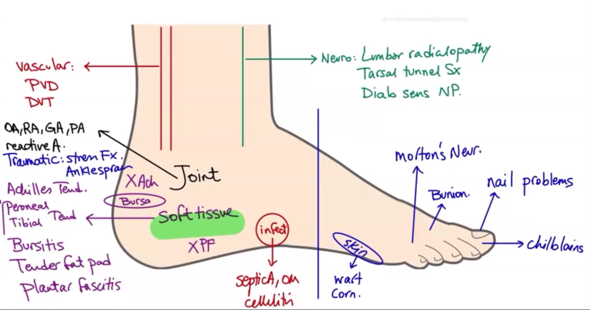

REVIEW OF FOOT PAIN DIFFERENTIAL

DIFFERENTIAL REVIEW OF FOOT PAIN — Lecture Framework
1. How to Think About Foot Pain (Box Approach)
The way to think about foot pain differentials is to put them into boxes:
A. Neurological Differentials
B. Vascular Differentials
C. Joint Differentials
- Essentially arthritis
D. Soft Tissue Differentials
These include:
- Plantar fasciitis
- Tender fat pad
- Bursas
- Achilles tendon
- Peroneal tendonitis
- Tibial tendonitis
E. Infections
- Infections can happen all over the foot
F. Malignancies
- Malignancies can happen all over the foot
2. Dividing Foot Pain by Location
A. Hindfoot Pain
- Pain in the back
B. Forefoot Pain
- Pain in the front
When dividing foot pain this way:
- Arthritis still happens
- Infections still happen
- All the entire things that we’ve asked still apply
The only change is in soft tissue focus.
3. Extra Differentials Important in Forefoot Pain
In forefoot pain, some conditions become more important:
- Morton’s neuroma
- Important when there is a burning pain in the front of the foot
- Important when there is a burning pain in the front of the foot
- Bunion
- Nail problems
- Chill blades
- Skin conditions
These become a little bit important in forefoot pain.
4. Sensory Neuropathy (Diabetic Foot Context)
A. Prevention
For diabetic sensory neuropathy:
- Getting diabetes under good control is the best preventive way
- This is how you stop it from getting worse
5. Role of Podiatry in Foot Problems
In all foot problems including:
- Sensory neuropathy
- Deformities
- Other foot problems
You should involve a podiatrist (allied health in Australia) for:
A. Foot Care
- Proper foot care
- Foot education for the patient to do at home
B. Podiatry Interventions
Podiatrists:
- Shave off corns
- Manage ingrown toenails
- In very elderly diabetic patients (e.g., 90 years old):
- Provide pedicure-type care
- Control extra skin
- Control nails
- Manage everything on the foot
- Provide pedicure-type care
6. Management of Neuropathic Pain
A. First Line
Start with less risky medications with fewer side effects:
- TCAs
- Amitriptyline
B. Stepping Up Treatment
Neuropathic pain is:
- One of the hardest pains to get under control
So treatment is often stepped up to:
- Pregabalin
- Gabapentin
These:
- Make you drowsy
- Have risk of dependence
7. Falls Risk in Sensory Neuropathy
A patient with:
- Old age
- Sensory neuropathy
Has a risk of falling.
Therefore:
- Fall management
- Reducing risk of fall
will always be important.